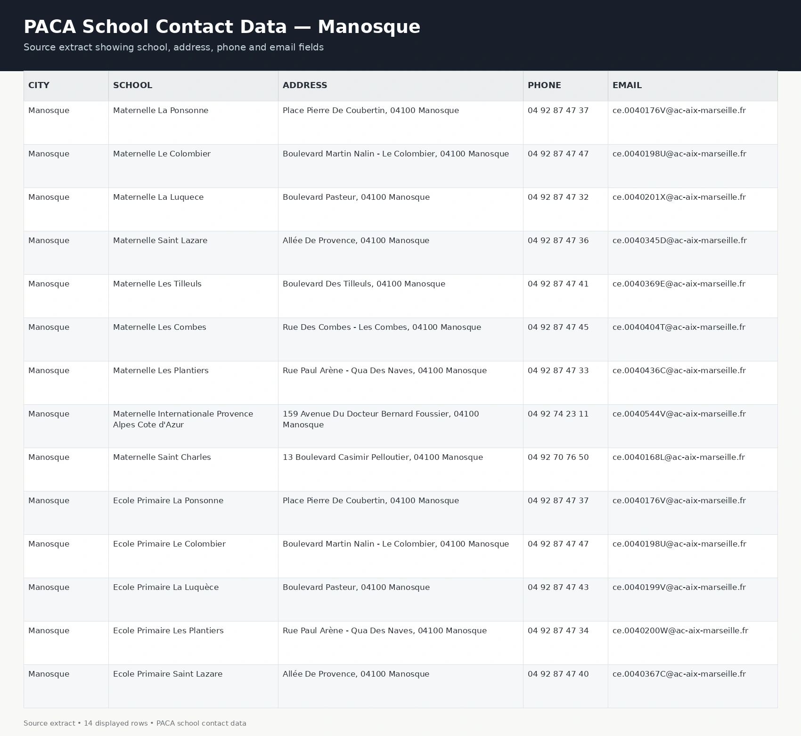
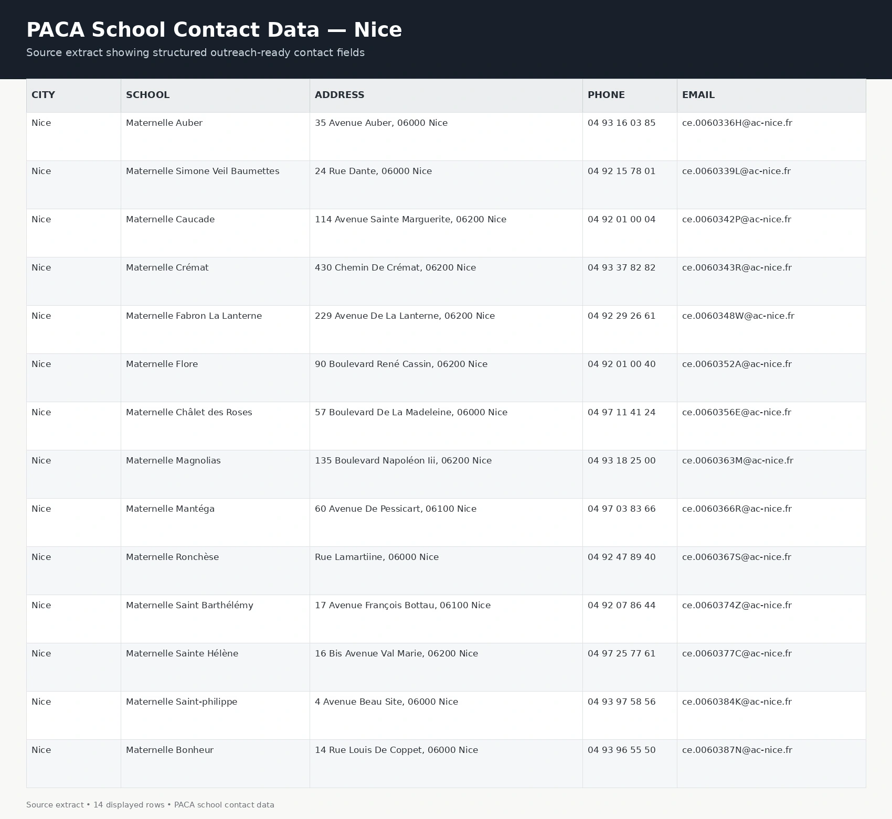

Review the sources
Worked through school data across multiple PACA files to understand the available records and fields.
DATA SCRAPING / CONTACT DATA STRUCTURING
Building a clean, outreach-ready school contact dataset across Provence-Alpes-Côte d’Azur, France.
Extracting, organizing and presenting school-level information in a working format for review, outreach and follow-up.

12 displayed sample rows across six PACA source files.
01 / THE CHALLENGE
The client needed school contact information from across PACA, but the material was spread across multiple regional source files. The information needed a consistent structure before it could support efficient review and follow-up.
The aim was to make schools, locations and contact details visible, logically arranged and easier to work with. A clear working format would make record checking and regional comparison simpler.
SOURCE COVERAGE
Examples visible in the supplied multi-region extract, arranged by department and city.
02 / MY CONTRIBUTION
I worked on data extraction, organization, cleaning support and dataset preparation. I approached the task as a usability problem: reduce the effort needed to scan, compare and check the data.
Spreadsheet work, web research and manual validation support connected source review with the final contact format.
Worked through school data across multiple PACA files to understand the available records and fields.
Organized school names, cities, addresses, phone numbers and email details.
Aligned information into a consistent tabular format for easier scanning and comparison.
Improved readability, formatting consistency and record-checking usability.
Shaped a practical dataset that the client could review and use for subsequent outreach work.
03 / WORKFLOW
Review the source files and understand how the school information is organized.
Separate school, city, address, phone and email into usable fields.
Align the extracted information into a cleaner, readable table structure.
Prepare the file for review, comparison, outreach planning and further enrichment.
CITY-LEVEL STRUCTURE
The Manosque extract shows how city-level records were arranged around a consistent set of contact fields. Keeping the same structure makes individual schools easier to review.

14 displayed sample rows. School, address, phone and email fields organized by city.
04 / PROOF OF WORK
Three supplied project extracts show the field structure at city level and across six regional sources. Select a sample to enlarge it, or open the original for a closer look.
14 displayed sample rows. School, address, phone and email fields organized by city.

14 displayed sample rows showing the same contact-field structure in a second city.
12 displayed sample rows comparing records from six PACA source files.
Named columns, consistent record layout, visible location fields and contact details arranged for review.
05 / WHY IT MATTERED
Scan school names and contact fields without switching between differently structured files.
Look across cities and departments using a shared record format.
Filter, prioritize and prepare subsequent contact activity.
Use the working structure as a base for later updates and additional research.
06 / OUTCOME
The output was a practical school contact dataset with a clearer structure for city-level and regional review. The broader engagement grew from an original target of 5,000 leads to more than 14,000 delivered records.
The result paired scale with usability: school names, locations and contact channels arranged so that the client could scan, compare and act on the information more efficiently.
07 / WHAT THIS PROJECT SHOWS
Work with structured and semi-structured information.
Select the fields that matter to the task.
Bring separate records into a shared structure.
Prepare outputs around the user’s next action.
08 / REFLECTION
This project reinforced the importance of field selection, structured formatting, consistency checking and client-oriented output design.
My role was to turn scattered information into something clear and usable, reducing the confusion and effort between receiving the file and taking the next step.
09 / PROJECT SNAPSHOT